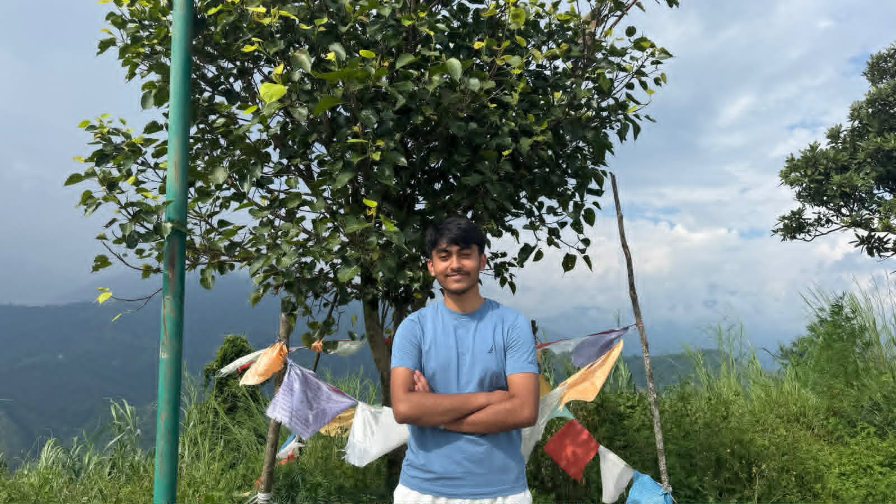

Good to meet you!
I'm Sarthak Adhikari
An Aspiring Software Developer
I am an aspiring software developer who enjoys learning,
creating, experimenting and turning ideas into reality. Overthinking in boring ideas to make them cool is the best way to make yourself
entertained. That's the best thing I'd like to do!
I am very enthusiastic in social working and finding solutions that make the hardest code easiest.

01 — ABOUT ME
Who Am I?
More than just a student.
" Passion is not doing something very hard or big, Passion is doing something with 100% ". I try to join in every tasks that make me look stupid. I'm a bachelor studying computer science who thinks he can achieve everything he wants with just a computer and that tiny brain.
Joining in socio-cultural activities and educating the young ones is a great feeling for me. I'm currently running in standard 11 with ambitions like working in high-tech companies one day. In spite of just thinking those ideas in my head, I try to put my effort to those imagninable thoughts into becoming the reality.
Curious
Always interested in learning something new, especially programming puzzles and quizes. But, when will I end these curiosities?
Creative
I enjoy turning ideas into something meaningful that makes most changes in the real-time.
Ambitious
Working towards becoming a better developer and having a peace life with lots of joy.
02 — MY INTERESTS
Things I Love
Programming
Exploring programming and software development. I try to learn small things that make huge difference. Even though I'm new to it, I still try my best!
Technology
Learning about modern technology, computers and Artificial Intelligence makes me feel educated and determined.
Creativity
I try to find new ways to solve a problem like in mathematics. I never give up thinking new projects.
Learning
Continuously improving myself through learning, motivating seeing my elders one excel in computer engeening makes me feel lost in the digital era. Matter of fact, I like to use short-cut tricks to make the work run faster and smoother.
The future belongs to those who keep learning.
— SARTHAK ADHIKARI